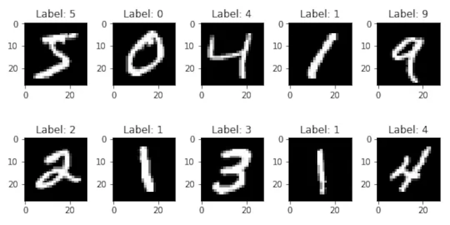
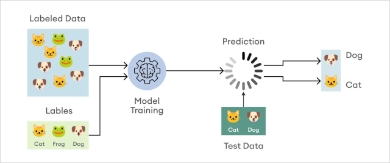

C2-IA-03 : Apprentissage automatique#
Objectifs pédagogiques#
connaître les bases de l’apprentissage automatique
données et caractéristiques
apprentissage supervisé et non supervisé
validation et tests
Définition : Apprentissage automatique#
L’apprentissage automatique (Machine learning en anglais) est une branche de l’intelligence artificielle qui se concentre sur le développement de techniques permettant aux ordinateurs d’apprendre à partir de données indexées et d’améliorer leurs performances au fil du temps sans être explicitement reprogrammés.
Les algorithmes d’apprentissage automatique utilisent des données pour apprendre des nouvelles règles de manière autonome.
Exemple introductif : MNIST#
La base de données MNIST (Mixed National Institute of Standards and Technology en anglais) est une base de données de 60’000 chiffres écrits à la main. Chaque image contient une méta-donnée, une étiquette (label en anglais) : le chiffre écrit.

C’est un jeu de donnée qui est utilisé pour tester les algorithmes d’apprentissage automatique.
Nicholas Wolff, collègue du gymnase de Beaulieu, a développé une application permettant de tester la reconnaissance de texte en utilisant la base de donnée MNIST : lien sur le site
Données et caractéristiques#
L’apprentissage automatique repose sur l’utilisation de données pour entraîner des modèles. Ce données peuvent être structurées (comme des tableaux de données) ou non-structurés (comme des images, des sons ou du texte).

Les caractéristiques (features en anglais) sont des propriétés mesurables des données utilisées par les modèles pour effectuer des prédictions ou prendre une décision. Par exemple, dans un problème de classification d’images, les caractéristiques pourraient être les pixels de l’image.
Etiquette d’une donnée#
Pour pouvoir être utilisées dans une phase d’entraînement, une donnée (image, son, etc..) doit contenir une meta-donnée qui caractérise la donnée. On appelle cette méta-donnée étiquette (label en anglais).

Apprentissage supervisé#
L’apprentissage supervisé consiste à entraîner un modèle à partir de paires de données d’entrée et de sortie de l’algorithme. Le modèle apprend à partir d’exemples étiquetés afin de faire des prédictions sur de nouvelles données
Les deux types principaux de tâches en apprentissage supervisé sont :
La classification : prédire une catégorie ou une classe (valeur discrète)
La régression : prédire une valeur numérique (valeur continue)

Processus d’apprentissage#
L’apprentissage supervisé implique trois phases :
Phase d’entraînement : le modèle (l’algorithme) est exposé à un ensemble de données étiquetées. Le modèle ajuste ses paramètres internes pour minimiser une fonction d’erreur (fitness function en anglais). Cette fonction d’erreur décrit la justesse du résultat d’apprentissage.
Phase de validation : le modèle est exposé à un nouvel ensemble de données étiquetées (différentes de celles qui ont permis l’entraînement).
Phase de test : le modèle est évalué sur un ensemble de données distinct pour estimer sa capacité à généraliser à de nouvelles données non utilisées pendant la phase d’entraînement ni de validation. Les données ne sont pas étiquetées
Google Teachable machine#
Google labs propose un outil en ligne extrêmement simple qui permet de tester un algorithme de classification avec un algorithme d’apprentissage supervisé.
Rendez-vous sur Teachable Machine.
Choisir le nombre de classes finales (catégories)
Importer des images de chaque classe pour entraîner le modèle
Importer d’autres images de tests que l’algorithme n’a jamais vu
Vérifier la prédiction
Apprentissage non-supervisé#
L’apprentissage non supervisé implique l’utilisation de données sans étiquette pour apprendre la structure ou les modèles des données. Contrairement à l’apprentissage supervisé, il n’y a pas de variable à prédire en sortie d’algorithme. L’objectif de ce type d’apprentissage est de découvrir des structures, des motifs ou des relations dans les données.
Types de tâches#
Il existe trois types de tâche dans l’apprentissage non-supervisé :
le regroupement (clustering en anglais) qui consiste à regrouper des données en fonction de leurs similitudes

la réduction de dimensionnalité (dimensionality reduction en anglais) qui consiste à supprimer des dimensions dans les données pour ne conserver que celles qui sont les plus discriminantes.

La détection d’anomalies (anomaly detection en anglais) qui consiste à découvrir et supprimer des données extrêmes qui perturbent un modèle.

Entraînement, validation et test#
L’entraînement est la première étape de l’apprentissage automatique. On dispose d’un ensemble de données étiquetées que l’on soumet à l’algorithme (au modèle). Cette phase permet de régler les paramètres de l’algorithme.
La validation est la seconde étape du processus de développement de modèles d’apprentissage automatique. Son objectif est d’évaluer la performance du modèle sur des données distinctes de celles utilisées par l’entraînement.
L’ensemble de validation est utilisé pour ajuster les paramètres de l’algorithme (du modèle). Ces paramètres sont :
le taux d’apprentissage : un facteur qui mesure la fréquence de modification des paramètres de l’algorithme. Plus il est élevé, plus le modèle “oublie” ce qu’il a appris. Si le taux est trop élevé, alors on observe une divergence lors de l’entraînement.
le nombre d’itérations : mesure le temps nécessaire à l’algorithme pour donner une réponse
la taille de l’ensemble de données
Le test est la phase finale du processus de développement du modèle : on utilise des données non étiquetées sur un algorithme entraîné.
On évalue finalement la performance de l’algorithme en comparant les sorties de l’ensemble de test avec la réalité. Il existe différentes mesures pour ce faire : on les appelle des métriques.

Evaluation des modèles#
Une fois qu’un modèle est entraîné, on peut le comparer avec d’autres modèles (algorithmes) qui résolvent le même problème.
Exemples#
Ci-dessous, une liste (non exhaustive) d’exemples où l’apprentissage est mis en application.
Apprentissage supervisé#
Filtrage d’email. Un email reçu est il un spam non désiré ou un envoi légitime (désiré). C’est clairement une classification.
Notation financière. Quels sont les risques pour un prêteur (une banque, un détenteur d’obligations ou un fournisseur) de se voir rembourser son prêt. C’est une classification.
Reconnaissance automatique de la voix. L’algorithme doit reconnaître les mots utilisés dans la parole enregistrée ou émise en direct. C’est aussi une classification (à plusieurs valeurs discrètes).
Prédiction du prix d’un bien immobilier. En connaissant la taille, le nombre de chambres, le lieu où il se trouve, la présence d’un jardin, etc… l’algorithme prédira le prix du bien. C’est une régression.
Diagnostic médical. En fonction de données médicales d’un patient (âge, maladies antérieures, symptômes, etc..), l’algorithme prédit le risque du patient de contracter ou non une maladie.
Match Tinder. En fonction du comportement de l’utilisateur A et du profil des autres utilisateurs, l’algorithme prédit quel est la probabilité d’un match entre A et les autres. C’est une regression.
Apprentissage non-supervisé#
Analyse du panier d’achat (Market Basket Analysis en anglais). En fonction des articles qu’un utilisateur a acquis (données récupérées online ou via système de cartes de type COOP Supercard ou Migros Cumulus), l’algorithme prédit quels sont les nouveaux articles susceptibles d’intéresser un utilisateur.
Zones accidentogènes. En fonction de la configuration d’une zone, l’algorithme prédit si elle est accidentogène ou pas.